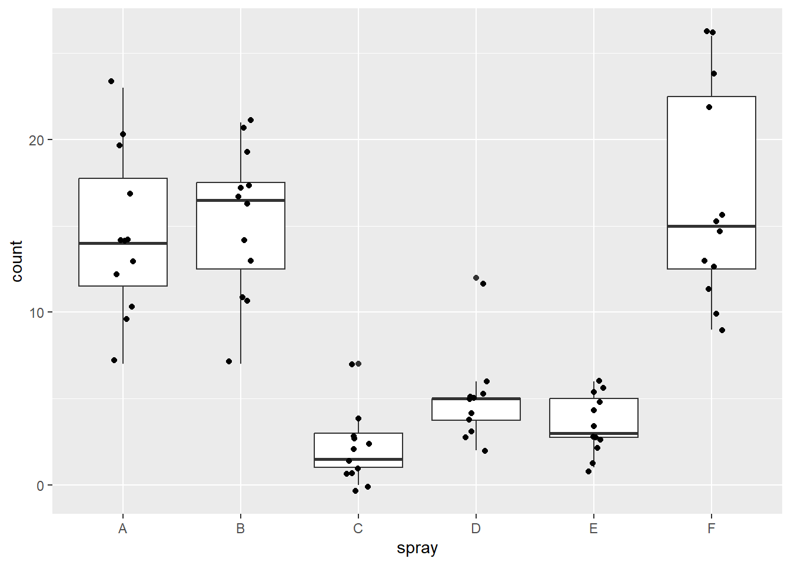
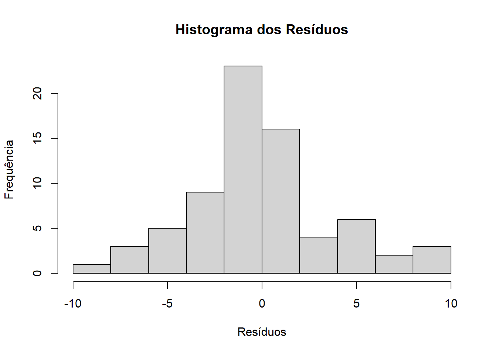

# Importação de bibliotecas
library(gsheet)
library(ggplot2)
library(tidyverse)
library(report)
library(rstatix)
library(ggpubr)
library(emmeans)
library(multcomp)
library(multcompView)
library(agricolae)
library(dplyr)Análise Não Paramétrica
Análise inferencial não paramétrica
Os testes não paramétricos são procedimentos estatísticos que não exigem suposições estritas sobre a forma da distribuição dos dados (por exemplo, normalidade). Em vez de trabalharem diretamente com valores observados, muitos deles se baseiam em rankings (posições relativas) ou em contagens de concordâncias/discordâncias, tornando-os mais robustos a outliers, assimetrias ou pequenas amostras. Podemos distinguilos entre pareados ou não pareados em função da depêndencia das amostras.
Teste de Wilcoxon (Mann-Whitney)
Pareado
Utilizando o teste de wilcoxon podemos identificar se há diferença entre dois grupos com observações indepentes ou depentes. A partir da combinação de dois grupos ordena-se um ranking total, e proseggue com a investigação a partir da soma dos ranking dos respectivos grupos.
Na versão pareada, são rankeadas as diferenças diferentes de 0 entre cada par. Então é realizada a soma das diferenças positivas e negativas, adotando o menor valor. Para conjunto pequenos (até 25 observações) utiliza-se a tabela de Wilcoxon para determinar o p-valor. Para grandes conjuntos adota-se a aproximação normal.
\[ d_i = x_i - y_i,\quad i=1,\dots,n \\ \\R_i : \text{posto de }|d_i| \]
\[ W = \sum_{d_i>0} R_i,\]
\[ W = \min(W^+,W^-) \]
Utilizando um conjunto de dados em que foi observado uma classificação por múltiplos avaliadores com e sem auxílio de uma escala, podemos exemplificar a aplicação de um teste de willcox pareado para identificarmos se houve diferença na performance da avaliação mediante ao uso da escala. Antes de execução do teste podemos averiguar que não há homocedasticidade ou distribuição normal do conjunto de dados, utilizando o teste F e o teste de Shapiro Wilk. Prosseguindo com o teste de Wilcox pareado, podemos observar que há diferença significativa entre os grupos.
ScaleDataframe = gsheet2tbl("https://docs.google.com/spreadsheets/d/1bq2N19DcZdtax2fQW9OHSGMR0X2__Z9T/edit?gid=1729131173#gid=1729131173")
Unaided = ScaleDataframe %>%
filter(assessment=="Unaided") %>%
dplyr::select(acuracia) %>%
pull()
Aided = ScaleDataframe %>%
filter(assessment=="Aided1") %>%
dplyr::select(acuracia) %>%
pull()
var.test(Unaided, Aided)
F test to compare two variances
data: Unaided and Aided
F = 20.978, num df = 9, denom df = 9, p-value = 0.000106
alternative hypothesis: true ratio of variances is not equal to 1
95 percent confidence interval:
5.210754 84.459185
sample estimates:
ratio of variances
20.97847 shapiro.test(Unaided)
Shapiro-Wilk normality test
data: Unaided
W = 0.7748, p-value = 0.007155shapiro.test(Aided)
Shapiro-Wilk normality test
data: Aided
W = 0.92852, p-value = 0.4335wilcox.test(Unaided, Aided, paired=TRUE)
Wilcoxon signed rank test with continuity correction
data: Unaided and Aided
V = 0, p-value = 0.005889
alternative hypothesis: true location shift is not equal to 0Não pareado
Utilizando um conjunto de dados relacionado a contagem de insetos após explosição a inseticidas utilizaremos o wilcox não pareado para verificar se há diferença entre o spray A e o C. Seguindo o protocolo demonstrado anteriormente, iremos averiguar a normalidade dos resíduos do modelo ajustado pelo teste de Anova utilizando o teste de Shapiro Wilk. Ao observarmos um p-valor menor que 0.05, constatamos que os resíduos não seguem a distribuição normal, invalidando o uso de Anova.
InsectsDataframe = InsectSprays
InsectsDataframe |>
ggplot(aes(spray, count))+
geom_boxplot(outlier.color=NULL)+
geom_jitter(width=0.1)
AnovaModel <- aov(count ~ spray, data = InsectsDataframe)
hist(residuals(AnovaModel), main = "Histograma dos Resíduos",
xlab='Resíduos', ylab = 'Frequência')
shapiro.test(residuals(AnovaModel))
Shapiro-Wilk normality test
data: residuals(AnovaModel)
W = 0.96006, p-value = 0.02226Dessa forma um alternativa seria utilizar o teste de Willcoxon não pareado. Na sua versão não pareada, a partir das somas dos ranking de cada grupo (R) é calculado U , adotando o menor valor de U encontrado obtem-se o p-valor a partir da distribuição de U. Como teste compara somente dois grupos, podemos selecionar dois inseticidas e compara-los. Observando que há diferença entre os inseticidas A e C.
\[ U_1 \;=\; n_1\,n_2 \;+\; \frac{n_1\,(n_1 + 1)}{2} \;-\; R_1 \]
\[ ou \]
\[ U_2 \;=\; n_1\,n_2 \;+\; \frac{n_2\,(n_2 + 1)}{2} \;-\; R_2 \]
\[ U = \min(U_1,U_2) \]
InsectsDataframe = InsectSprays
SprayA = InsectsDataframe |>
filter(spray=="A") |>
dplyr::select(count) |>
pull()
SprayC = InsectsDataframe |>
filter(spray=="C") |>
dplyr::select(count) |>
pull()
wilcox.test(SprayA, SprayC, paired=FALSE)
Wilcoxon rank sum test with continuity correction
data: SprayA and SprayC
W = 143.5, p-value = 3.836e-05
alternative hypothesis: true location shift is not equal to 0Teste de Kruskall-Wallis
O teste de Kruskall-Wallis permite a comparação de mais de 2 grupos, que não atendem a distribuição normal. Para possibilitar a comparação, ao invés de comprar os valores, performa a organização de todos valores em ranking, e compara a soma do ranking de cada grupo. A hipótese nula (H0) considera que os grupos são iguais, enquanto a hipótese alternativa (H1) considera que há diferença em algum dos grupos. A soma dos ranking ao quadrado divida pelo número de obbservações do respectivo grupo, é normalizada por uma constante construida a partir do número total de observações, e subtraida por um termo de correção que visa centralizar a distribuição de forma em que sob condições de H0 H é igual a aproximadamente.
\[ H = \frac{12}{N(N+1)} \sum_{i=1}^{k} \frac{R_i^2}{n_i} - 3(N+1) \]
O valor de H implica sobre a diferença entre a soma dos rankings, ao ser comparado a uma distribuição chi-quadrado com grau de liberdade k-1. Obtendo assim um p-valor, caso menor do que alfa rejeita-se H0, e afirma-se que há ao menos uma grupo distinto.
InsectsDataframe = InsectSprays
kruskal(InsectsDataframe$count, InsectsDataframe$spray, group=TRUE, console=TRUE)
Study: InsectsDataframe$count ~ InsectsDataframe$spray
Kruskal-Wallis test's
Ties or no Ties
Critical Value: 54.69134
Degrees of freedom: 5
Pvalue Chisq : 1.510845e-10
InsectsDataframe$spray, means of the ranks
InsectsDataframe.count r
A 52.16667 12
B 54.83333 12
C 11.45833 12
D 25.58333 12
E 19.33333 12
F 55.62500 12
Post Hoc Analysis
t-Student: 1.996564
Alpha : 0.05
Minimum Significant Difference: 8.462804
Treatments with the same letter are not significantly different.
InsectsDataframe$count groups
F 55.62500 a
B 54.83333 a
A 52.16667 a
D 25.58333 b
E 19.33333 bc
C 11.45833 c